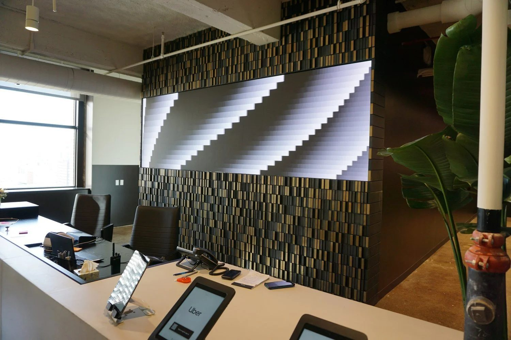
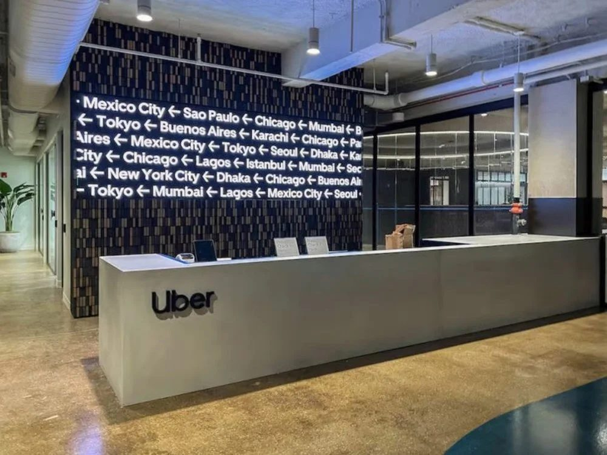
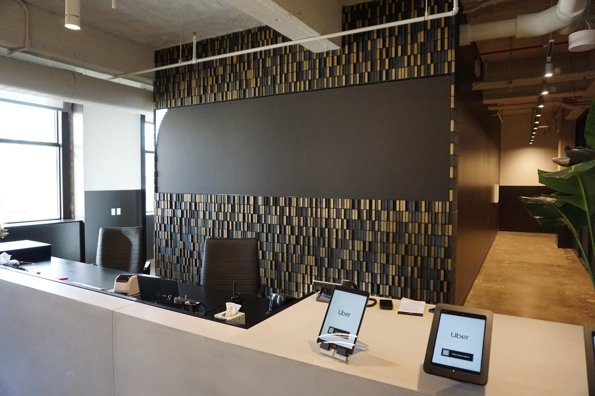
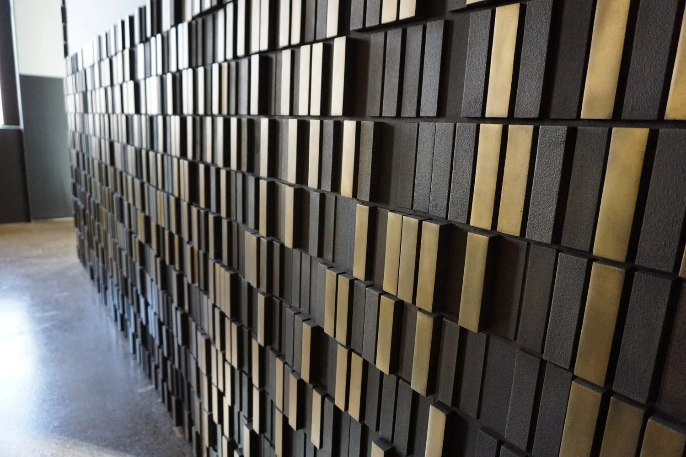
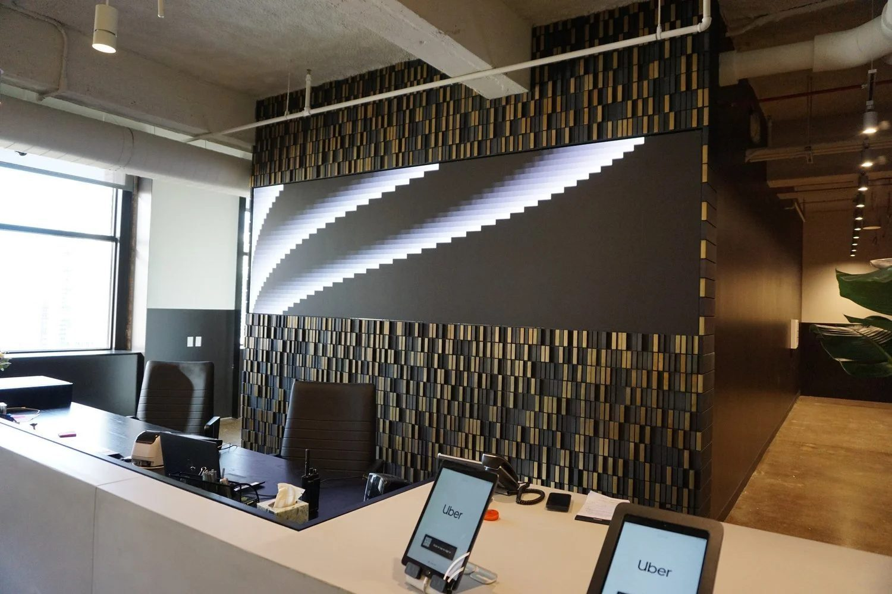

Architectural / 2021
Parametric Feature Wall
Uber Freight HQ, Old Post Office
A cast metal wall derived from the bird's eye view of a shipping yard, modeled parametrically and cast component by component.
The wall draws from an unexpected source: the view of a shipping yard from space. The reference ties Uber Freight's mission directly to the architecture of its office.
Using Grasshopper, we built a parametric model tuned to the exact constraints of the space, then sliced the model into individual cast components, each one unique but part of a continuous field.
Mold creation was automated so the volume of unique parts stayed economical, and the castings were finished and assembled on site into a single continuous surface.
Details
- Year
2021 - Location
Chicago, IL - Category
Architectural - Materials
Cast aluminum
Credits
- Architect: Gensler
- Fabrication partner: Parenti & Raffaelli
Index




